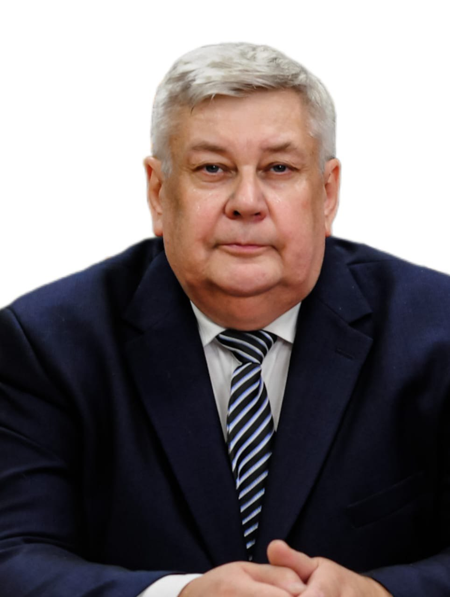
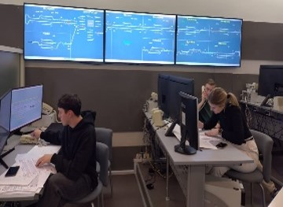

Безопасная экосистема интеллектуальной транспортной инфраструктуры
Цель проекта
Технологический суверенитет РФ в области цифровых решений для железнодорожного транспорта

-
Никитин Александр Борисович
Руководитель стратегического проекта
-
(812) 310-07-88
(812) 457-82-92
Задачи проекта
Научно-исследовательская политика:
- Разработка и тиражирование систем безопасного управления движением поездов нового поколения;
- Научно-методическое обеспечение проектирования и эксплуатации систем управления нового поколения;
- Разработка пула прикладных цифровых продуктов для управления транспортной и складской логистикой;
- Работа с цифровыми моделями и двойниками при управлении жизненным циклом объектов транспортной инфраструктуры;
- Разработка технико-технологических решений магнитолевитационной транспортной технологии.
Образовательная политика:
- Разработка новых и модернизация существующих учебных программ ВО, ДПО, ДПП, аспирантуры, в том числе в сетевой форме;
- Обеспечение подготовки кадров для цифровой экономики;
- Академический обмен в области цифровых технологий.
Инфраструктурная и кампусная политика:
- Испытательный полигон;
- НИЛ в области безопасных систем управления на транспорте;
- НОЦ ИИ по управления перевозочным процессом;
- Уникальная научная установка по МАГЛЕВ;
- Лаборатория оценки «человеческого фактора» в безопасности объектов транспортной инфраструктуры.
Основные достигнутые результаты
Новые учебные, научные и инжиниринговые центры, лаборатории
- Учебная лаборатория «Микропроцессорные и электронные телемеханические устройства ЖАТ»;
- Лаборатория «Цифрового моделирования, управления движением и виртуальной реальности» (I этап);
- Лаборатория «Интернет вещей».
Оборудование и ПО для:
- НИЛ «Комплексные системы управления движением поездов»;
- Тестовой лаборатории «Безопасность прикладного программного обеспечения ЖАТ»;
- Модернизации учебного центра управления перевозками им. Б.П. Бещева
- Исследований и экспертиз с применением «цифровых двойников»
